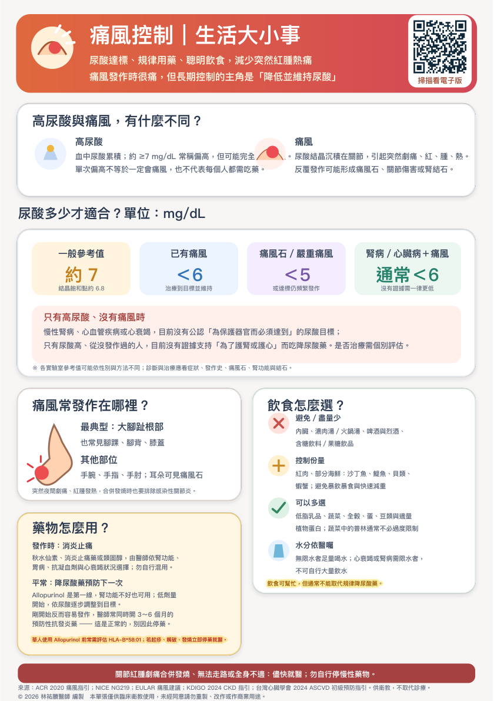

💊
藥物怎麼用？
主題 5／6藥物怎麼用？
發作時：消炎止痛
秋水仙素、消炎止痛藥或類固醇，由醫師依腎功能、
胃病、抗凝血劑與心衰竭狀況選擇；勿自行混用。
平常：降尿酸藥預防下一次
Allopurinol 是第一線，腎功能不好也可用；低劑量
開始，依尿酸逐步調整到目標。
剛開始反而容易發作，醫師常同時開 3～6 個月的
預防性抗發炎藥 —— 這是正常的，別因此停藥。
華人使用 Allopurinol 前常需評估 HLA-B*58:01；若起疹、嘴破、發燒立即停藥就醫。下載原始 A5 衛教單查看原始衛教圖卡

點選圖卡可開啟大圖。原稿來源與說明
來源：ACR 2020 痛風指引；NICE NG219；EULAR 痛風建議；KDIGO 2024 CKD 指引；台灣心臟學會 2024 ASCVD 初級預防指引。供衛教，不取代診療。
© 2026 林祐賸醫師 編製 本單張僅供臨床衛教使用，未經同意請勿重製、改作或作商業用途。